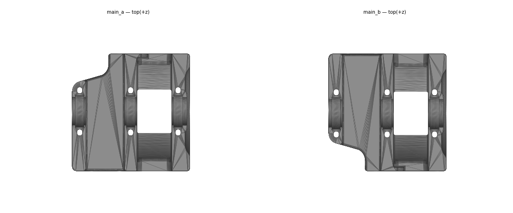
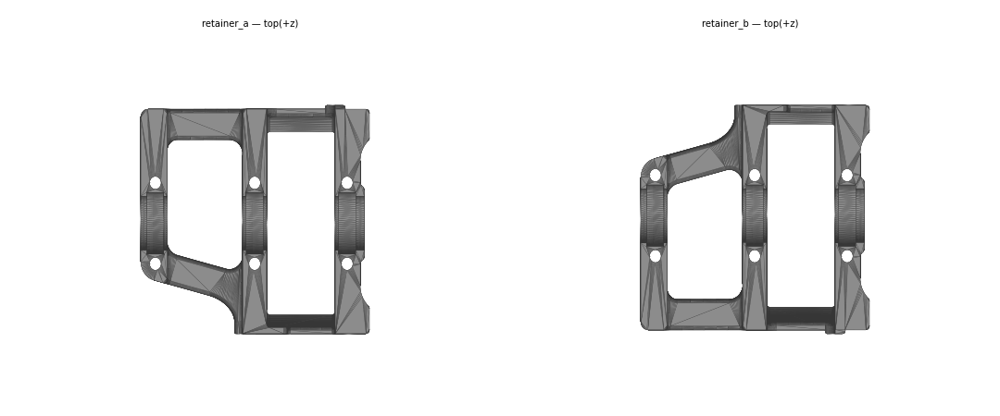
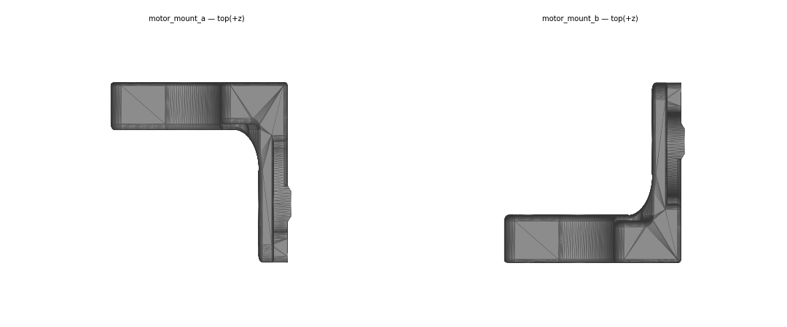

Chapter 02 — Z drives, Z idlers, Z rails, deck panel¶
One page per step
Read this chapter one step per page — big pictures, prev/next, and the same tick marks. This page is the whole chapter in one scroll.
Builds the four Z drive units, the four Z idlers, the four Z linear rails and the deck panel. When this chapter closes, the frame has a floor, feet, and every part of the Z motion system except the belts and the Z joints — the gantry has somewhere to hang from.
What you're building in this chapter: the machinery that raises and lowers the gantry, one corner at a time. A Z drive is the gearbox in a bottom corner: a printed housing holding three bearings and a shaft, with a big 80-tooth pulley the motor drives through a short closed belt and a 20-tooth pulley the long Z belt runs over — 80:16 of reduction, which is what makes Z fine enough to print with. The housing is two printed halves: a shallow retainer tray the shaft and its bearings drop into, and the deeper main body that closes over them on six long screws and carries the two M5×40 that bolt the drive to the frame. An orange baseplate bolts across the drive's foot face and holds the nut the rubber foot screws into, and an orange cam tensioner pushes the motor along its extrusion to pull the short belt tight. Directly above each drive, at the top corner, a Z idler carries a free-spinning pulley that turns the long belt back down again; its orange slider is the adjuster you tension that belt with in Ch 06 (final tension is set in Ch 14). Between them run the four Z linear rails on the vertical extrusions, the tracks the gantry's corners actually ride on. Last comes the deck panel, the acrylic floor that divides the electronics bay underneath from the print chamber above — it goes in now because once the gantry and the wiring are in, it cannot be lifted out again. Four corners, all identical in function, built from mirrored _a and _b printed parts — diagonal corners share a hand (the map is at Step 02.02).
Time: 4.25–6.25 h hands-on, first build (survey §7.2, less the ~45 min of rail cleaning and greasing, which is done once for all seven rails in Ch 00 Steps 00.18–00.21).
Sessions: 11 × ~30 min — the Pause: lines below break the chapter into 11 segments; every minute figure is a first-build estimate.
Prerequisites:
- Chapter 01 complete: frame assembled, squared, bed extrusions positioned 65 mm each side of the printer centreline (130 mm clear gap between their inner faces, 150 mm centre-to-centre) per Ch 01 Step 01.19, and the squareness re-checked after the final torque pass.
- Print batch B00 (Calibration & jigs) —
MGN9_rail_guide_x2,pulley_jig. - Print batch B01 (Z drive assemblies) — drive bodies, retainers, motor mounts, Z-tensioner brackets, deck supports.
- Print batch B02 (Accent parts, orange) plates P1 and P3 — the five
[a]_parts below. - Steps 02.27–02.28 (16T pulleys, motors onto their mounts) need only B01-P2 and the Motor Kit — do them while B01-P1 is still printing if you like, and label the motor cables then.
- Chapter 00 complete: all seven rails cleaned, flip-and-packed with grease, wiped and labelled (Steps 00.18–00.21). The four marked Z0–Z3 are used here.
- Kit boxes open: Motion, Linear Rail Kit, Motor Kit, the M3/M5 fastener bags.
Tools
- Hex drivers 1.5 / 2 / 2.5 / 3 / 4 mm — good quality, not ball-end for set screws (p.32).
- Temperature-controlled soldering iron + the LDO brass M3 heat-set tip.
- Digital caliper (deck-panel thickness gate; 33 mm and 10.7 mm pulley dimensions).
- Printed jigs:
MGN9_rail_guide_x2×2,pulley_jig×1. - Masking tape (carriage retention, rail hole marking, the FRONT label) and a marker. The 3 mm hex key doubles as the rail-gap feeler (Step 02.06).
Consumables: Loctite 243 for any set screw that did not arrive with threadlocker pre-applied. (IPA, grease, soak tray, syringe and cloth were the Ch 00 rail-prep kit — nothing here needs them unless a rail was missed.)
Printed parts — all ASA. Black = main colour, Orange = accent ([a]_ prefix).
Parts arrive in the bins named below (see the bin map in print/README.md#bins); check the bin label's list before you start.
| Looks like | STL (Voron-2 STLs/, branch Voron2.4) |
Bin | Qty | Colour |
|---|---|---|---|---|
 |
Z_Drive/z_drive_main_a_x2.stl |
02-Z0 · 02-Z2 | 2 | Black |
 |
Z_Drive/z_drive_main_b_x2.stl |
02-Z1 · 02-Z3 | 2 | Black |
 |
Z_Drive/z_drive_retainer_a_x2.stl |
02-Z0 · 02-Z2 | 2 | Black |
 |
Z_Drive/z_drive_retainer_b_x2.stl |
02-Z1 · 02-Z3 | 2 | Black |
 |
Z_Drive/z_motor_mount_a_x2.stl |
02-Z0 · 02-Z2 | 2 | Black |
 |
Z_Drive/z_motor_mount_b_x2.stl |
02-Z1 · 02-Z3 | 2 | Black |
 |
Z_Drive/[a]_z_drive_baseplate_a_x2.stl |
02-Z0 · 02-Z2 | 2 | Orange |
 |
Z_Drive/[a]_z_drive_baseplate_b_x2.stl |
02-Z1 · 02-Z3 | 2 | Orange |
 |
Z_Drive/[a]_belt_tensioner_a_x2.stl |
02-Z0 · 02-Z2 | 2 | Orange |
 |
Z_Drive/[a]_belt_tensioner_b_x2.stl |
02-Z1 · 02-Z3 | 2 | Orange |
 |
Z_Idlers/z_tensioner_bracket_a_x2.stl |
02-Z0 · 02-Z2 | 2 | Black |
 |
Z_Idlers/z_tensioner_bracket_b_x2.stl |
02-Z1 · 02-Z3 | 2 | Black |
 |
Z_Idlers/[a]_z_tensioner_9mm_x4.stl |
02-Z0 · 02-Z1 · 02-Z2 · 02-Z3 | 4 | Orange |
 |
Panel_Mounting/deck_support_3mm_x8.stl |
02-deck | 8 | Black — default (Rev D 350 BOM), see Step 02.12 |
| no render — same clip, slotted for a 4 mm panel | Panel_Mounting/deck_support_4mm_x8.stl |
— | 8 | Black — fallback if the panel measures 4 mm |
 |
Tools/MGN9_rail_guide_x2.stl (jig, not consumed) |
00-jigs | 2 | Black |
 |
Tools/pulley_jig.stl (jig, not consumed) |
00-jigs | 1 | Black |
 |
LDO STLs/z_rail_stop_x4.stl (optional) |
06-Z-joints | 4 | Black — batch B05, which prints after this chapter in the timeline |
The _xN suffix is the quantity you need, not the number of copies in the file — each STL contains one part. _a and _b are mirrored: two drives use the a set, two use the b set.
Hardware — chapter totals.
| Fastener / part | Qty |
|---|---|
| M3×8 SHCS | 24 (drives) + 36 (Z rails — 9 per rail, Step 02.06) |
| M3×16 SHCS | 4 |
| M3×40 SHCS | 24 |
| M3 hexnut | 4 |
| M3 roll-in T-nut, 2020 | 36 (one per Z-rail screw) |
| M3×5×4 brass heat-set insert | 36 (Step 02.04) + up to 7 on the practice coupon (Step 02.03) |
| M5×10 BHCS | 8 (drives) |
| M5×16 BHCS | 4 |
| M5×30 BHCS | 12 (idlers: 2 mounting + 1 axle each) |
| M5×40 SHCS | 8 |
| M5 hexnut | 4 |
| M5 roll-in T-nut, 2020 | 28 (16 drives + 8 idlers + 4 deck) |
| M5 precision spacer, 1 mm (kit substitute for "M5 Shim") | 16 |
| M4×4 set screw, pre-applied threadlocker | 24 (2 each on 4× 20T, 4× 80T, 4× 16T) |
| 625-2RS bearing | 12 |
| GT2 80T pulley, 5 mm ID | 4 |
| GT2 20T 9 mm pulley, 5 mm ID | 4 |
| GT2 16T pulley, 5 mm ID 6 mm W | 4 |
| GT2 20T 9 mm idler, 5 mm ID | 4 |
| 5×60 mm shaft | 4 |
| Gates 2GT closed loop, 6 mm × 188 mm | 4 |
NEMA17 Z motor, LDO-42STH48-2004AC(VRN) |
4 |
MGN9H 400 mm rail, LDO-SLR9H-400Z0 |
4 |
| Rubber foot, 38×19 mm | 4 |
| Deck panel, acrylic black 469×469 | 1 |
Quantities cross-checked against the LDO Rev D 350 BOM (350_BOM/Rev_D); the LDO kit ships 6× MGN9H-400 and 1× MGN12H-400 — four of the MGN9s are yours here, the other two are the gantry Y rails in Chapter 05.
Read first
- The rails were cleaned and greased in Ch 00, not here. Flip-and-pack needs access to the back of the rail, which you lose the moment it is bolted to an extrusion — so if any of Z0–Z3 was missed, fix it before Step 02.06, not after (rail grease guide; survey §4.4 #5, §5.2 W9).
- The Z motors are the only place in the whole printer that uses 16T pulleys. They look almost identical to the 20T. Get them off the bench when this chapter is done (p.38; survey §4.4 #7).
- Every set screw gets threadlocker and must land on the flat/D-cut of the shaft. Loose set screws are the single most reported failure on this machine (p.32; §5.2 W12).
- Two corners take
_aparts, two take_b, and diagonal corners share a hand —_aat Z0 (front-left) and Z2 (rear-right),_bat Z1 (rear-left) and Z3 (front-right); map at Step 02.02, dry-fit at Step 02.29. A wrong-hand drive bolts on fine and is only found in Ch 06 when the Z belt goes on and the 20T is not under its idler. - Heat-set inserts go into the drive parts before the drive is assembled. A missed insert means taking a finished drive back apart (§4.4 #4, §5.2 W3).
- The deck panel and its supports go in now, at p.28–30 — not later with the panels. Retro-fitting the deck means pulling the frame apart (LDO note p.29–30; §5.2 W4).
- Nothing in this chapter touches a probe or an endstop. The Rev D+ nozzle probe and the Omron inductive probe belong to Chapters 08–09; leave both bagged.
Sources for this chapter:
- Voron 2.4r2 assembly manual (pinned
de7e89d) pages 22–51 — Z rails, deck panel, drive assemblies, motor mounts, corner installs, Z idlers - LDO Build Notes (Rev D) — deck supports at p.29–30, the second-hole rail rule, precision spacers, tight T-nuts
- LDO 350 Rev D BOM — quantities, motor and rail part numbers, the 3 mm deck panel line
- LDO rail grease guide — the flip-and-pack method the four Z rails were prepped with in Ch 00
- LDO heat-set insert tool guide — the 36-insert pass
- LDO wiring guide § Connecting Steppers — Z0–Z3 →
STEPPER-0…STEPPER-3 - LDO wiring guide § Installing the DIN Rails and Wire Ducts — why the four deck bolts wait for Ch 09
- LDO Klipper config
leviathan-printer-rev-d-sbv2.cfg—gear_ratio: 80:16,rotation_distance: 40 - LDO printed parts guide (Rev D) — the optional
z_rail_stop_x4 - Voron-2
STLs/Z_Drive, Voron-2STLs/Z_Idlers, Voron-2STLs/Panel_Mounting, Voron-2STLs/Tools - survey §4.3, §4.4, §5.2 · print plan batches B00/B01/B02
Video coverage (Steve Builds, pre-release LDO kit — differs from Rev D+): Part 1 @3:08:34 (+4m), Part 1 @3:20:00 (+9m), Part 1 @3:28:20 (+7m), Part 1 @3:34:50 (+9m), Part 2 @0:55:00 (+7m), Part 2 @1:18:20 (+14m), Part 2 @1:36:40 (+8m)
Steps¶
Step 02.01 — Lay out and label the chapter's printed parts¶
  
What you're looking at: The printed parts from three batches: the deep z_drive_main body and shallow z_drive_retainer tray that clamp each drive's bearings, the motor mount L-brackets, the orange baseplates and belt tensioners, and the Z idler brackets. Every one exists as a mirrored _a and _b.
Parts: all Chapter 02 printed parts from batches B00, B01 and B02.
Do:
- Sort the drive parts into
*_aand*_bpiles, two drives each, against the pair renders above. - Write
aorbon the inside face of every part. - Reject any part with a lifted corner or a delaminated bolt boss.
Check
12 black parts: 4 main, 4 retainer, 4 motor mount, two of each hand; 8 orange accents, 4 idler brackets, 4 sliders, 8 deck clips.
Tip
Cradles up: the z_drive_main cut corner and its two 9 mm bolt wells sit far from you on _a, near on _b. The retainer cut corner is near-left on _a.
Tip
reprint rather than force a warped z_drive_main — it holds the shaft alignment for the whole Z axis. src
Source: Voron manual p.22 · LDO printed parts guide (Rev D) · print plan · Video: Part 1 @3:08:47
Step 02.02 — Learn the four Z positions before you build anything¶

What you're looking at: Manual p.23 shows the whole Z system: four drives at the bottom corners, four idlers directly above them, four vertical rails and the deck panel. Z0–Z3 is the naming this manual, the kit wiring and its Klipper config all share. See the glossary.
Parts: none.
Do:
- Memorise the corners from the front of an upright printer: Z0 front-left, Z1 rear-left, Z2 rear-right, Z3 front-right.
_abuilds Z0 and Z2,_bbuilds Z1 and Z3; each idler takes the hand of the drive below.
Check
You can point at each of the four corners and say its Z number and its hand without looking.
Caution
Rev D+ / LDO: this naming is what the kit's wiring and Klipper config assume — Z0→STEPPER-0, Z1→STEPPER-1, Z2→STEPPER-2, Z3→STEPPER-3 on the Leviathan. Label each motor's cable with a kit cable tag as you fit it in this chapter and you save an hour in Chapter 10. src
Tip
The hand map comes from the official CAD, not a manual page. Confirm it by dry-fitting the first drive at Z0 at Step 02.29 before any bolt goes in.
Source: Voron manual p.23 · Voron manual p.40 · LDO wiring guide § Connecting Steppers · Voron-2 CAD Voron_2.4r2_Assembly_STEP.zip @ de7e89d (corner map)
Step 02.03 — Dial in the iron on the practice coupon before you touch a structural part¶

What you're looking at: The Heatset_Practice coupon and the iron. A heat-set insert is a knurled brass sleeve melted into a printed boss to give it a real M3 thread instead of plastic. See the glossary. Calibrate on scrap: too hot bulges the boss, too cold goes in crooked.
Parts: Heatset_Practice coupon from B00 (7 pockets on the STL — 3 in a side face, 4 in the top, all the same Ø4.7 × 5 mm as the drive parts); M3×5×4 brass heat-set inserts, up to 7 for practice.
Do:
- Fit the brass M3 tip, tongue set flush with an insert's height.
- Set the iron so the plastic goes soft, not runny.
- Drive each insert ~90 % home, then press it flat with a steel block.
Check
On the coupon, an insert goes in square in under 5 seconds with no visible bulge, two in a row.
Caution
Rev D+ / LDO: the kit supplies the brass tip (Brass Heatset Insert tool (for M3 Brass Inserts), 1 off) and 153 inserts for the whole build. 36 go into the drive parts in the next step; the coupon spends up to 7 more. src
Tip
Do not leave the iron sitting in a part, or powered longer than needed: the brass tip oxidises.
Source: Voron manual p.31 · LDO heat-set insert tool guide · LDO 350 Rev D BOM
Step 02.04 — Seat the heat-set inserts in the Z drive parts¶
What you're looking at: In front of you are the four retainers and four drive mains. The thirty-six inserts are the threads that hold each drive closed: the six in each retainer's flat face take the M3×40s, the three in the drive's foot face take the baseplate's M3×8s.
Parts: M3×5×4 brass heat-set inserts ×36; z_drive_retainer_a/b ×4; z_drive_main_a/b ×4.
Do:
- With the iron from Step 02.03, seat 7 inserts per
z_drive_retainerand 2 perz_drive_main, flush, then let each part cool. - Insert pockets are Ø4.7 × 5 mm deep. Ø6 counterbores on the main's flat face take no insert.
Check
36 inserts in, every one flush or a hair below, none cocked, no melted bulge, nothing in a counterbore.
Tip
The retainer's 7 are 6 in the flat print face plus 1 in a side face; the main's 2 are both in one side face.
Tip
Count the Ø4.7 pockets on your own parts before you start; if a part shows a different number, trust the part. A plain M3 clearance hole is Ø3.4 mm.
Source: Voron manual p.31 · LDO heat-set insert tool guide
Good stopping point · ~40 min since the last one
printed parts sorted into a and b piles and inspected, the iron temperature confirmed on the coupon, and all 36 heat-set inserts seated in the four retainers and four drive mains. Unplug the iron. Nothing is assembled.
Step 02.05 — Confirm the four Z rails are already cleaned and greased¶

What you're looking at: Manual p.24 shows a linear rail and its carriage. These four MGN9H rails are the vertical tracks the gantry's corners ride on. They were degreased and packed with grease in Ch 00, because that job needs the back of the rail. See the glossary.
Parts: MGN9H 400 mm rails ×4 (the four labelled Z0–Z3 in Ch 00).
Do:
- Unbag the four rails marked Z0–Z3; check labels and carriage tape.
- Run each carriage end to end: smooth and silent, not dry or notchy.
- Work over the bench, never the floor: a dropped carriage is scrap.
Check
Four labelled rails on the bench, carriages taped or stoppered, each smooth and silent over full travel, no grease on any rail's outside.
Caution
Rev D+ / LDO: the kit does not include grease, and the rails ship with a shipping oil rather than a lubricant. If you do have to prep a rail here, use NLGI 0 or NLGI 1 — Super Lube 21030, Mobilux EP1/EP2, or white lithium — never a thin oil or a PTFE dry lube. src
Tip
If a rail was missed, do Ch 00 Steps 00.18–00.20 on it now and let it dry completely before it goes near the frame.
Source: Voron manual p.24 · LDO rail grease guide · LDO Build Notes (Rev D)
Step 02.06 — Fit the first Z rail, centred, with the MGN9 guides¶

What you're looking at: Manual p.25 shows a rail going onto a vertical extrusion, with the printed rail guides drawn in green. The guides straddle rail and extrusion and hold the rail centred on the 20 mm face while you start the screws.
Parts: MGN9H 400 mm rail ×1; M3×8 SHCS ×9; M3 roll-in T-nut ×9; MGN9_rail_guide_x2 jigs ×2; a 3 mm hex key as the feeler.
Do:
- Slip a
MGN9_rail_guideover each rail end. - Pre-load nine M3 T-nuts in the front-left vertical's rear-looking face.
- Rest the rail on a 3 mm hex key and start nine screws finger-tight in holes 2, 4 … 18.
Check
Rail centred on the front-left vertical's rear-looking face, sitting on the 3 mm key, all nine screws started, both end holes empty.
Caution
Rev D+ / LDO: LDO's note "do not use the holes on the ends of the rails, use the second ones from the ends" is written against manual p.88; the survey generalises it to every rail (§4.4 #6). Use holes 2, 4 … 18 of a 20-hole rail on all four Z rails. src
Tip
Tape-mark the nine holes before you start. Test-fit each T-nut: if one jams, swap the nut, not the face. On the rear verticals the rail faces forward.
Tip
Peel the two end-stop bands from Step 00.17 only with the rail lying flat on the bench, never on edge or with the carriage near an end.
Source: Voron manual p.25 · LDO Build Notes (Rev D)
Step 02.07 — Tighten from the centre outward¶
What you're looking at: Manual p.25 again: the same rail, now being tightened. Working outward from the middle presses the rail flat against the extrusion. Starting at one end walks a bow along the rail, and a bow is the tight spot you feel later.
Parts: the rail from Step 02.06.
Do:
- Tighten from the middle of the rail outward, alternating up and down. Snug, not gorilla-tight: an M3 into a T-nut will strip.
- If a tight spot shows, back the screws off and re-tighten from the centre.
Check
With the guides removed, the carriage feels identical at every point over the rail's full length. Any tight spot means the rail is not flush.
Source: Voron manual p.25 · Voron manual p.24
Step 02.08 — Secure the carriage before the printer is turned over¶

What you're looking at: Manual p.26: the carriage and the risk. The carriage rides on recirculating ball bearings retained only by the rail, so it must be tethered before the frame is inverted. A carriage that runs off the end spills its balls and is scrap.
Parts: masking tape, or the rail's plastic shipping stoppers, or optional z_rail_stop_x4.
Do: Tape the carriage to the rail, or refit the plastic shipping stopper, so gravity cannot walk it off the end. The printer goes upside down at Step 02.11 and an untethered carriage slides off the bottom end.
Check
The carriage cannot move to the end of the rail under its own weight.
Source: Voron manual p.26
Good stopping point · ~25 min since the last one
the first Z rail is centred, tightened centre-outward, verified smooth over full travel, and its carriage is taped. A rail is a self-contained unit; stop only with one finished, never with half its screws started.
Step 02.09 — Install the remaining three Z rails¶

What you're looking at: Manual p.27: all four Z rails on their verticals. Read the graphic for the mounting face, not the pairing. The two left rails face each other across the machine's depth, and the two right rails do the same.
Parts: MGN9H 400 mm rails ×3; M3×8 SHCS ×27; M3 roll-in T-nut ×27.
Do: Repeat Steps 02.06–02.08 on the other three verticals. Each rail faces the other rail on its own side: front-left faces rear-left, front-right faces rear-right. Keep the same 3 mm bottom gap and holes 2–18 on all four.
Check
Four rails installed, the two rails on each side pointing at each other, all four bottom gaps equal, every carriage taped and running smoothly.
Caution
Manual p.27 says only "make sure the rails face each other as shown in the graphic" and leaves the pairing to the drawing. The official CAD at the pinned commit de7e89d says every Z rail's mounting face is normal to ±Y: the two rear rails face forward, the two front rails face rearward. Corrected 2026-09-05. src
Tip
The CAD is the 250 machine: MGN9 300 mm rails on 430 mm verticals. Yours are MGN9H 400 mm on 350 verticals; the mounting face is the same.
Source: Voron manual p.27 · CAD-render pilot §8 — Z rail orientation · Voron-2 CAD Voron_2.4r2_Assembly_STEP.zip @ de7e89d · CAD: Voron 2.4r2 STEP @ de7e89d
Step 02.10 — Optional: fit the LDO rail stops at the top of each Z rail¶

What you're looking at: The grey render is the LDO rail stop, a printed clip that caps a rail's top end so a carriage cannot run off during the gantry install in Ch 06. It clips to the free top length above the carriage.
Parts: z_rail_stop_x4.stl ×4 (LDO repo, black) — printed in batch B05, which comes after this chapter in the timeline.
Do: If B05 is already printed, fit a stop to the top of each Z rail now, while the rails are accessible. If not, skip: the tape from Step 02.08 covers you until Ch 06.
Check
A stop on each of the four rails, or a decision to defer them to Ch 06 with the tape left in place.
Tip
LDO also uses a rubber rail stopper under the Z joints as a gantry rest at manual p.114–116. That is Chapter 06 — do not confuse the two. src
Tip
The CAD rail is MGN9 300 mm on a 430 mm vertical, leaving ~107 mm bare above it. The stop clips to the rail end, not to a dimension.
Source: LDO printed parts guide (Rev D) · LDO Build Notes (Rev D) · CAD render — assets/cad/PILOT.md · Video: Part 4 @1:27:15 · CAD: Voron 2.4r2 STEP @ de7e89d
Good stopping point · ~35 min since the last one
all four Z rails are on, facing each other, sharing the same ~3 mm bottom gap and hole pattern, every carriage taped or stoppered. The frame is still the right way up. Do not turn it over until the carriages are secured.
Step 02.11 — Turn the printer upside down and pre-load the deck T-nuts¶

What you're looking at: Manual p.28: the frame inverted, with four M5 roll-in T-nuts dropped into the top slots of the two bed extrusions. The printer spends the next fifteen manual pages upside down because every Z drive bolts to the underside of the bottom frame rails.
Parts: M5 roll-in T-nut ×4.
Do: Confirm every carriage is taped, then turn the frame upside down onto the flat reference surface. Slide four M5 T-nuts into the upward-facing slots of the two bed extrusions, two per extrusion, where the deck panel's holes will land.
Check
Frame sits flat and does not rock in this orientation; four T-nuts in, free to slide, none dropped inside an extrusion.
Tip
Load the 16 drive-corner M5 T-nuts now too, four per bottom corner, two in each extrusion that meets there. Test-fit each slot: LDO's T-nut tolerance note applies. src
Source: Voron manual p.28
Step 02.12 — Caliper the deck panel and choose the support thickness¶

What you're looking at: Manual p.29: the deck panel and its support clips. The deck panel is the acrylic floor separating the electronics bay below from the print chamber above. See the glossary. The printed clips twist into the extrusion slots and their ledges carry the panel's edges.
Parts: deck panel; caliper; deck_support_3mm_x8 ×8 (printed, B01); deck_support_4mm_x8 only if the caliper says 4 mm — a 30-minute reprint.
Do: Measure the actual thickness of your deck panel with the caliper, in three places. Do not resolve this from documents. Pick the clip set that matches what you measured; the clips go in at Step 02.14, after the panel.
Check
Three readings agree within 0.1 mm, the number is in your build log, and eight clips of the matching thickness are on the bench.
Caution
Rev D+ / LDO: LDO's build note for p.29–30 says the LDO deck panel is 4 mm nominal — use deck_support_4mm, but the Rev D 350 BOM lists it as 469×469×3 mm. The size-specific 350 BOM wins, so B01 prints the 3 mm** set. Measure, fit whichever matches, reprint the other if you have to. src · BOM
Source: Voron manual p.29 · LDO Build Notes (Rev D) · LDO 350 Rev D BOM · Video: Part 2 @0:56:54
Step 02.13 — Drop the deck panel in, notch to the back¶
What you're looking at: Manual p.28: the deck panel dropping onto the bed extrusions. The panel is cut 1 mm smaller than the bottom frame's opening, 469 mm on the 350, so it sits inside the frame on the two bed extrusions. The cut-out notch is the cable pass-through.
Parts: deck panel ×1.
Do:
- Peel any protective film.
- Lower the panel into the bottom frame's opening, cut-out notch toward the back, flat on both bed extrusions.
- Line the four bolt holes up over the four T-nuts.
Check
Notch at the back. Panel inside the frame opening, flat on both bed extrusions, flush with the frame face, no rock or gap.
Source: Voron manual p.28 · LDO 350 Rev D BOM
Step 02.14 — Fit the deck support clips¶
What you're looking at: Manual p.29: eight deck support clips going into the extrusion slots. Each deck_support is a small T-tab, about 20 × 14.5 × 5.8 mm, with a ledge. Inverted, these eight ledges are the only thing carrying the panel until Ch 09 bolts it.
Parts: deck support clips ×8 (the thickness you chose in Step 02.12).
Do:
- Push a clip's tab end-on into the inward-facing slot of a bottom-frame extrusion above the panel edge, then twist it 90° so the ledge lies over the panel.
- Two per side, evenly spaced (verify on bench).
Check
Eight ledges over the panel edge, all the same thickness variant; the panel cannot be lifted out of the frame.
Caution
Rev D+ / LDO: this step is not in the official manual at all. LDO adds it here: "This is a good time to install the deck supports." Doing it later means the deck comes out and the frame comes partly apart (§5.2 W4). src
Source: Voron manual p.29 · LDO Build Notes (Rev D) · Video: Part 2 @0:56:54
Step 02.15 — Line the four M5 T-nuts up under the deck holes and stop there¶
What you're looking at: Manual p.29: the four T-nuts sitting under the four holes in the deck, and nothing else. The bolts that go through those holes also clamp the two DIN rails that carry the electronics, so they belong to one step in Ch 09.
Parts: the four M5 T-nuts already in the bed extrusions. No bolts and no DIN rails yet.
Do:
- Slide each T-nut directly under one of the four deck-panel holes, then leave them there.
- The two 35 mm DIN rails and the four M5×10 BHCS that clamp them go on in Ch 09 Step 09.5.
Check
Four T-nuts visible through the four deck holes, free to nudge but not lost inside an extrusion. Panel sitting flat, unbolted, notch to the back.
Tip
If a DIN rail's own slots will not line up when you get there, Ch 09 shortens the DIN rail rather than moving the panel. src
Source: Voron manual p.29 · LDO wiring guide § Installing the DIN Rails and Wire Ducts
Step 02.16 — Fix the printer's orientation in your head¶

What you're looking at: Manual p.30: the orientation cube the manual prints on every graphic from here on. With the printer inverted, front and back stop being obvious, and every "which corner" callout for the rest of the chapter is read against that marker.
Parts: none.
Do: Put a strip of masking tape on the front bottom frame rail, the one the front ends of the two bed extrusions run into, and write "FRONT" on it.
Check
Front face marked, and you can restate the Z0–Z3 map from Step 02.02 with the printer inverted.
Source: Voron manual p.30
Good stopping point · ~30 min since the last one
the printer is inverted and stable, the deck panel is in with its notch to the back and captured by eight support clips of the measured thickness, the four M5 T-nuts sit under the deck holes, and the FRONT tape is on. Leave the deck unbolted: those four bolts belong to Ch 09 Step 09.5.
Step 02.17 — Fit the 20T pulley to the 5×60 shaft, 33 mm out¶

What you're looking at: Manual p.32: the Z drive's shaft assembly. The 5 × 60 mm shaft is the drive's axle; the 20T pulley is what the long Z belt runs over. A set screw is a headless screw that clamps a pulley to a shaft.
Parts: 5×60 mm shaft ×1; GT2 20T 9 mm pulley ×1; M4×4 set screws ×2 (pre-threadlocked).
Do:
- Slide the 20T pulley on so 33 mm of shaft protrudes on the long side.
- Rotate until you see the D-cut flat down a set-screw hole.
- Fit both set screws with a hex driver, not a ball-end.
Check
One set-screw hole showed the flat before the screws went in; 33 mm from the long shaft end to the pulley's toothed face.
Caution
Rev D+ / LDO: the kit's M4×4 set screws arrive with threadlocker pre-applied — do not add more. If a screw has clearly been used before or has no visible compound, add Loctite 243 and keep it off the printed parts. src
Source: Voron manual p.32 · LDO 350 Rev D BOM
Step 02.18 — Verify the pulley with the jig, then repeat ×4¶
What you're looking at: Manual p.32 with the printed pulley_jig: a flat gauge with steps cut to the pulley heights the build uses. It repeats the 33 mm dimension across all four shafts without re-measuring, so the four corners lift on belts that all sit in the same plane.
Parts: pulley_jig.stl; the remaining three shafts and 20T pulleys; M4×4 set screws ×6.
Do: Check the pulley position against the printed pulley_jig, then build the other three shaft/pulley pairs the same way.
Check
Four shafts, four 20T pulleys, all at the same protrusion, all with a set screw on the flat, all eight set screws tight.
Source: Voron manual p.32 · Voron-2 STLs/Tools
Step 02.19 — Build the bearing/pulley stack on each shaft¶


What you're looking at: Manual p.33: the full stack on the shaft. Three 625-2RS bearings, plain 5 × 16 × 5 mm ball bearings, carry the shaft; the 80T pulley is what the short 188 mm belt drives, and the brass precision spacers set the spacing. See the glossary.
Parts: per drive — 625-2RS bearings ×3; GT2 80T pulley ×1; M5 precision spacer 1 mm ×4; the shaft from Step 02.17.
Do: Outward from the 20T pulley: a 625 bearing on its collar side; on the other side two M5 spacers, a 625, two spacers, 80T pulley, and the last 625 on the shaft end. Press by hand, inner race only.
Check
Your stack matches the p.33 graphic: both outer bearings spin free, no spacer trapped crooked, the 80T running true with no rim wobble.
Caution
Rev D+ / LDO: the manual says "M5 Shim". The kit supplies brass M5 precision spacers instead — use those, everywhere in the manual from p.19 onward unless a note says otherwise. Four per drive, 16 for this chapter. src
Source: Voron manual p.33 · LDO Build Notes (Rev D) · Video: Part 2 @0:06:45
Step 02.20 — Threadlock the 80T pulley set screws and check your work¶
What you're looking at: Manual p.33: the 80T pulley's two set screws. This is the joint the entire weight of the gantry hangs on through the belt, and loose set screws are the most-reported failure on this machine, so both get threadlocker and one lands on the flat.
Parts: M4×4 set screws ×2 per 80T pulley.
Do: Set the 80T pulley so a set screw meets the shaft's flat, fit both set screws with threadlocker, and tighten. Build all four stacks.
Check
Four complete shaft assemblies, all matching the graphic, none able to slip when you twist the 80T pulley against the shaft by hand.
Source: Voron manual p.33 · Video: Part 1 @3:46:04
Step 02.21 — Fit the 188 mm closed belt loop over the 80T pulley¶

What you're looking at: Manual p.34: the closed 188 mm belt loop dropped over the 80T pulley. It is a continuous loop with no join, so it has to be threaded on before the drive is closed.
Parts: Gates 2GT closed loop 6 mm × 188 mm ×1 per drive.
Do: Drop the closed belt loop over the 80T pulley, teeth inward, before the shaft goes into the housing. The loop has no join, so this is the only moment it can go on.
Check
Loop seated in the 80T pulley's teeth, hanging free, not twisted.
Caution
Rev D+ / LDO: LDO publishes no deviation for the Z belt loop, the 16T/80T pulleys or the Z gear ratio — the Build Notes for p.22–51 cover only p.29–30 (deck supports) and p.39 (stepper wiring). The kit's Klipper config confirms the stock arrangement: [stepper_z] rotation_distance: 40, gear_ratio: 80:16. Use the 188 mm loops as supplied. src
Source: Voron manual p.34 · LDO Build Notes (Rev D) · LDO Klipper config leviathan-printer-rev-d-sbv2.cfg · Video: Part 1 @3:29:28
Good stopping point · ~35 min since the last one
four complete shaft assemblies: 20T pulleys at 33 mm, bearing and precision-spacer stacks built, 80T pulleys threadlocked, and the 188 mm belt loops hung on. The bearings are only slid onto the shaft here, so nothing is mid-assembly. Do not start Step 02.22 until you can close a drive in one sitting.
Step 02.22 — Seat the shaft assembly into z_drive_retainer (the shallow half)¶

What you're looking at: Manual p.35: the shaft assembly lowering into z_drive_retainer, the shallow tray half of the housing, 16 mm deep, with six brass inserts in its flat outer face. Its three half-round cradles take the 625 bearings; the deeper z_drive_main clamps them from the other side.
Parts: z_drive_retainer_a or _b ×1, inserts fitted; the belted shaft assembly from Step 02.21.
Do:
- Set the retainer inserts down, cradles up.
- Lower the shaft assembly so each 625 drops into a cradle, the loop in the pocket.
- If one will not seat by hand, do not heat or hammer.
Check
All three bearings down in their cradles, the shaft parallel to the retainer's flat face, and the belt loop lying in the pocket.
Source: Voron manual p.35
Step 02.23 — Check the shaft position against the section view¶
What you're looking at: Manual p.35's section view beside your part. The section is the only place the manual shows which side of the 20T pulley each spacer and bearing belongs on: after the main goes on, six long screws have to come back out to fix it.
Parts: none.
Do: Hold your part next to the isometric and section views. Confirm the 20T pulley is on the same side, the spacer stack sits between the same two bearings, and the shaft ends are flush the same way.
Check
Your assembly and the drawing are indistinguishable. Fix it now: after the main goes on, six M3×40 have to come back out.
Source: Voron manual p.35
Step 02.24 — Close the drive with z_drive_main and six M3×40¶

What you're looking at: Manual p.36: z_drive_main, the deeper half, closing over the shaft. Its flat face has six counterbored holes, no inserts, and a rectangular window that clears only the 80T rim. The six M3×40 run through both halves and bite the inserts in the retainer's outer face.
Parts: z_drive_main_a or _b ×1 (side inserts fitted, Step 02.04); M3×40 SHCS ×6.
Do:
- Lower the main over the shaft, counterbores up, halves meeting with no gap.
- Drive the six M3×40 SHCS through the counterbores into the retainer's inserts, criss-cross. Snug, then stop.
- Every head must sink into a counterbore.
Check
Six heads down in their counterbores, no gap along the joint line, and the shaft still spins freely by hand with the belt on.
Tip
If the shaft binds, a bearing is trapped crooked: back the screws off and reseat.
Source: Voron manual p.36 · Video: Part 1 @3:29:31
Step 02.25 — Fit the orange baseplate and its captive M5 nut¶
What you're looking at: Manual p.37: the orange [a]_z_drive_baseplate, with an M5 hex nut dropped into a pocket on its plain face, the face that goes against the drive. That captive nut is the thread the rubber foot's M5×16 screws into.
Parts: [a]_z_drive_baseplate_a or _b ×1 (orange); M5 hexnut ×1; M3×8 SHCS ×3.
Do:
- Turn the baseplate plain-face up, drop the M5 hexnut into the pocket.
- Flip it straight onto the drive's foot face, pocket down, C-notch over an M5 well.
- Secure with three M3×8 SHCS from the counterbored face.
Check
Nut trapped behind the plate and unable to spin, plate flat on the drive with no rock, three M3×8 heads sunk in their counterbores.
Tip
Counterbored face up, C-notch opening to your left: the notch is far-left on _a, near-left on _b. Match the baseplate to the letter on its drive.
Source: Voron manual p.37
Step 02.26 — Confirm the belt loop is captured¶

What you're looking at: Manual p.37: the assembled drive with the belt loop visible inside it. The loop leaves the housing through the retainer's rectangular window, the face with the six insert heads, and must hang out far enough to hook over the motor's 16T.
Parts: none.
Do: Look into the drive through the retainer's window. The closed 188 mm loop must be inside the part, around the 80T pulley, with enough slack hanging out of that window to reach the motor pulley.
Check
Belt visible inside the drive and free to move. Repeat Steps 02.22–02.26 for the other three drives, two a and two b.
Source: Voron manual p.37
Good stopping point · ~35 min since the last one
all four drives closed: shafts seated, retainers down on six M3×40 each, orange baseplates on with their captive M5 nuts, belt loops captive and free. Each drive is one ~9-minute unit, so if you stop earlier, stop with a drive fully closed and its baseplate on — never with a drive half-closed.
Step 02.27 — Fit the 16T pulley to a Z motor at 10.7 mm¶

What you're looking at: Manual p.38: a Z stepper motor with its 16T pulley. The Z motors are the only place in this printer that uses 16T. The 20T pulleys elsewhere look identical, and fitting a 20T here silently changes the gear ratio the firmware assumes. See the glossary.
Parts: NEMA17 Z motor LDO-42STH48-2004AC ×1; GT2 16T pulley ×1; M4×4 set screws ×2.
Do:
- Check the tooth count: the only 16T pulleys in the printer.
- Slide it on so motor face to pulley underside is 10.7 mm.
- Rotate so a set screw meets the flat; tighten both with threadlocker.
Check
10.7 mm on the caliper, the tooth band level with the 80T it will drive, no slip under hand force.
Tip
when all four are done, physically remove every remaining 16T pulley from the bench so one cannot end up on an A/B motor in Chapter 04. src
Tip
The pulley may sit better flipped, depending on the motor. What matters is where the teeth end up, not which way the boss faces.
Source: Voron manual p.38 · LDO Build Notes (Rev D) · Video: Part 2 @1:15:06
Step 02.28 — Bolt the motor to z_motor_mount, watching the cable exit¶

What you're looking at: Manual p.39: the motor bolted to z_motor_mount, the L-bracket that stands the motor off the frame. The mounts are mirrored _a / _b, and the two hands put the motor's cable exit on opposite sides. Three screw holes only: the fourth corner is open by design.
Parts: z_motor_mount_a or _b ×1; M3×8 SHCS ×3.
Do:
- Set the motor's round boss in the plate's half-round notch, cable exit oriented as in the graphic.
- Fit three M3×8 SHCS through the plate's counterbored holes into the motor.
- Build all four: two
amounts, twob.
Check
All four cable exits point the same way relative to their mount, the 16T clears the mount, the foot's two M5 clearance holes unobstructed.
Caution
Rev D+ / LDO: the manual's own stepper wiring instructions do not apply to this kit. Wire the Z steppers per the LDO Rev D wiring guide (Z0 front-left→STEPPER-0, Z1 rear-left→STEPPER-1, Z2 rear-right→STEPPER-2, Z3 front-right→STEPPER-3). Label each motor cable now: in Chapter 10 the four are indistinguishable. src · wiring guide
Tip
Stood on its print face, thick foot arm on your right running toward you: the thin motor plate is the far edge on _a, the near edge on _b.
Source: Voron manual p.39 · LDO Build Notes (Rev D) · LDO wiring guide § Connecting Steppers · Video: Part 2 @1:19:26
Good stopping point · ~25 min since the last one
four Z motors carry their 16T pulleys at 10.7 mm and are bolted to their a/b mounts with the cable exits matched. Get every remaining 16T pulley off the bench before you walk away, and leave the motor cables labelled.
Step 02.29 — Identify Z0 and start there¶

What you're looking at: Manual p.40: the highlighted corner is Z0, front-left. The mirror hand of the printed parts decides which corner an assembly fits, so the drive and motor mount are matched to the corner before a single bolt goes in.
Parts: one complete _a drive + one _a motor/mount assembly.
Do:
- Find the front-left corner from the FRONT tape; lay an
_adrive and motor assembly beside it. - Dry-fit first: retainer face toward the motor's extrusion, counterbore face outboard over the side rail, 16T in line with the 80T.
Check
An _a drive and motor dry-fitted at front-left: retainer face toward the motor's extrusion, counterbore face outboard over the side rail, baseplate up.
Tip
If the dry-fit only works with the _b parts, the map is reversed. Swap every _a for _b for the rest of the chapter and write that in the build log.
Source: Voron manual p.40 · Voron manual p.41 · Voron-2 CAD Voron_2.4r2_Assembly_STEP.zip @ de7e89d (corner map)
Step 02.30 — Pre-load four M5 T-nuts at the Z0 corner¶

What you're looking at: Manual p.41: four M5 roll-in T-nuts loaded into the two bottom extrusions meeting at this corner. They are the threads for everything that bolts down here: two for the drive body's M5×40, two for the motor foot's M5×10. The drive-end one also pins the cam.
Parts: M5 roll-in T-nut ×4 (or the four you pre-loaded at Step 02.11).
Do:
- Slide four M5 T-nuts into the two extrusions at this corner, two in each.
- Two M5×40 go into the side rail; two M5×10 lie along the front or rear rail, 25 mm apart. Z0/Z3 front, Z1/Z2 rear.
Check
Four T-nuts in, two per extrusion, all free to slide, none jammed or dropped inside the extrusion.
Source: Voron manual p.41 · LDO Build Notes (Rev D) · Voron-2 CAD Voron_2.4r2_Assembly_STEP.zip @ de7e89d (which rail takes which bolts)
Step 02.31 — Bolt the drive body down with two M5×40¶
What you're looking at: Manual p.41: the finished drive landing in the corner on two long M5×40 that run down the body's two 35 mm wells into the T-nuts. The drive is the fixed half: its two bolts go fully tight now.
Parts: M5×40 SHCS ×2; the completed _a drive.
Do:
- Set the drive baseplate up, retainer face toward the motor's extrusion, counterbore face outboard.
- Drop both M5×40 down the deep wells into the side-rail T-nuts, pull the body hard into the corner, tighten both fully now.
Check
Body hard against both extrusions, both M5×40 tight; the 188 mm loop hanging out of the retainer's window over the motor's extrusion.
Tip
The p.42–43 DON'T TIGHTEN applies to the two M5×10 in the motor foot. Those are the only bolts at this corner that stay loose.
Source: Voron manual p.41
Step 02.32 — Slide the motor assembly in at an angle¶

What you're looking at: Manual p.42: the motor and its mount sliding in beside the drive at an angle, with the hanging belt loop hooked over the 16T on the way in. That angled entry is the only path that gets the loop onto both pulleys.
Parts: M5×10 BHCS ×1; the _a motor/mount assembly.
Do:
- Hold the motor/mount at an angle, hook the loop over the 16T, slide the foot onto the extrusion beside the drive.
- Fit one M5×10 BHCS through the foot hole farthest from the drive and leave it loose.
Check
Loop squarely in both the 16T and 80T tooth bands, motor foot flat on the extrusion, motor-end screw loose, drive-end foot hole empty.
Source: Voron manual p.42
Step 02.33 — Fit the orange belt tensioner, still loose¶

{kind=link}
{kind=link}
{kind=link}
{kind=link}
{kind=link}
{kind=link}
{kind=link}
What you're looking at: Manual p.43: the orange [a]_belt_tensioner, a cam whose lobe lies in a pocket under the drive end of the motor foot. The lobe is eccentric: swinging the tab from upright to flat pushes the motor foot away and takes up the belt slack.
Parts: [a]_belt_tensioner_a or _b ×1 (orange); M5×10 BHCS ×1.
Do:
- Slide the cam's lobe flat-face-down into the 4 mm pocket under the foot's drive end, hole over the foot's empty hole.
- Fit the second M5×10 BHCS through both and leave it loose: a pivot, not a fastener.
Check
Tab free to swing about the screw; motor still free to slide along the extrusion; both M5×10 in the foot loose.
Tip
Flat face down, round lobe on your left: the upright tab is far-right on _a, near-right on _b. The wrong hand swings away from the motor.
Source: Voron manual p.43 · Video: Part 2 @1:18:50
Step 02.34 — Flip the tensioner latch closed¶

What you're looking at: Manual p.44: the cam being rotated closed. Closing it is what tensions the belt; the arrow on the page is the direction that pushes the motor foot away from the drive body. The tab ends flat in the notch in the foot's outer edge.
Parts: none.
Do: Swing the tab toward the motor, in the direction of the p.44 arrow, until it lies flat and seats in the notch. The lobe moves the motor foot ~2–3 mm away from the drive body, which must not move.
Check
Tab flat in the notch and the loop taut: turning the motor shaft by hand spins the 80T with no slip or belt skip.
Source: Voron manual p.44 · Voron-2 CAD Voron_2.4r2_Assembly_STEP.zip @ de7e89d (cam throw)
Step 02.35 — Tighten the M5 bolts¶

What you're looking at: Manual p.45: the two M5×10 in the motor foot, the motor-end one and the drive-end one through the cam. They are tightened only now, with the cam closed, so the motor position the cam set is what gets locked in.
Parts: none — the four M5 bolts already fitted.
Do: Only now, with the cam closed, tighten the two M5×10 in the motor foot; the drive-end one clamps the cam as well. Then confirm the two M5×40 in the drive body have not moved.
Check
All four bolts tight. Nothing has moved. The belt is still correctly seated in both pulleys.
Source: Voron manual p.45 · Video: Part 2 @1:18:48
Step 02.36 — Fit the rubber foot¶
What you're looking at: Manual p.45: one of the printer's four rubber feet, bolted to the corner while the machine is still upside down and the underside is reachable. Its M5×16 threads into the nut captive in the orange baseplate.
Parts: Rubber foot 38×19 mm ×1; M5×16 BHCS ×1.
Do: With the printer still upside down, set a rubber foot on the baseplate at this corner and fix it with one M5×16 BHCS through the foot into the M5 nut you dropped into the baseplate at Step 02.25.
Check
Foot square to the corner and firmly attached.
Source: Voron manual p.45 · Video: Part 1 @3:34:45
Step 02.37 — Check the drive did not shift when the tensioner closed¶

What you're looking at: Manual p.46: a section through the finished corner. Closing the cam pushes the motor away from the drive body, and the reaction shoves the body. If it was not seated square when its M5×40 went tight it moves, and the section is how you tell.
Parts: none.
Do: Sight down the section view on the page and compare. The drive body must still sit hard against the corner and square to both extrusions.
Check
No skew, no gap at the corner, belt still fully on both pulleys. If the drive moved, undo the bolts, realign, and redo Steps 02.34–02.35.
Source: Voron manual p.46
Good stopping point · ~30 min since the last one
the Z0 corner is complete: drive body on its two M5×40, motor slid in, cam closed, both M5×10 tight, rubber foot on, and the p.46 section check passed. One corner is a self-contained unit and this is the natural stop.
Step 02.38 — Build and fit the other three Z drives¶

What you're looking at: Manual p.47: all four corners done. Two corners take the _a hand of every printed part, Z0 and Z2, and two take _b, Z1 and Z3. The cable labels go on now because in Ch 10 four identical black stepper cables arrive at the mainboard together.
Parts: the remaining three drives, motors, mounts, tensioners, feet and their hardware.
Do:
- Repeat Steps 02.29–02.37 at Z2 rear-right with the other
_aset, then at Z1 rear-left and Z3 front-right with the_bparts: diagonal corners share a hand. - Label each motor's cable Z0/Z1/Z2/Z3 by its physical corner.
Check
Four drives, feet, tensioned belts, closed cams and labelled cables. Deck captured by its eight clips, the frame back upright on its feet without rocking.
Source: Voron manual p.47 · LDO wiring guide § Connecting Steppers · Video: Part 2 @0:02:14
Good stopping point · ~55 min since the last one
since the last pause, in three ~18-min corners — Z1, Z2 and Z3 built and fitted the same way. Stop after any corner whose four M5 bolts are tight, tensioner closed and foot fitted; never with a cam open and the motor free to slide. All four cables labelled Z0–Z3 by physical corner.
Step 02.39 — Assemble a Z idler cage¶
{kind=link}
What you're looking at: Manual p.48: the Z idler, the assembly at the top corner that turns the long Z belt back down. z_tensioner_bracket is the printed cage that bolts to the frame; the orange [a]_z_tensioner_9mm slides inside it on the screw you tension the Z belt with in Ch 06.
Parts: z_tensioner_bracket_a or _b ×1; [a]_z_tensioner_9mm ×1 (orange); M3×16 SHCS ×1; M3 hexnut ×1.
Do: Drop the M3 hexnut into the bracket's pocket. Slide the orange tensioner in and run the M3×16 SHCS up through it into the nut. Leave it a couple of turns short of tight.
Check
Nut captive, screw engaged, tensioner sliding smoothly in the bracket with no side play.
Tip
In plan, print face down, the slider channel's open side toward you and the two oval slots left–right: tab on the left = _a, on the right = _b.
Source: Voron manual p.48 · Video: Part 2 @1:37:11
Step 02.40 — Fit the 20T idler on its M5×30 axle¶

What you're looking at: Manual p.48: a 20T idler dropped into the fork of the orange tensioner on an M5×30 screw used as its axle. An idler is a pulley that redirects a belt without driving it. See the glossary. It has to spin freely and stay in plane.
Parts: GT2 20T 9 mm idler ×1; M5×30 BHCS ×1.
Do: Drive the M5×30 BHCS through the slider's fork with the 20T 9 mm idler between the arms. It cuts its own thread in the Ø5 holes, so keep it square. Build all four, two a brackets and two b.
Check
Idler spins freely on the axle with no axial slop, and its tooth band sits centred in the fork. Four idlers built.
Source: Voron manual p.48
Good stopping point · ~20 min since the last one
four idler cages assembled with their captive M3 nuts and 20T idlers on M5×30 axles, tensioner screws left deliberately short of tight. Nothing is mounted to the frame yet.
Step 02.41 — Pre-load two M5 T-nuts at a top corner¶

What you're looking at: Manual p.49: two M5 T-nuts in the vertical extrusion at a top corner, on the vertical's inner side face, positioned for the idler bracket's two mounting holes.
Parts: M5 roll-in T-nut ×2.
Do: Slide two M5 T-nuts into the vertical at the top corner above a Z drive, in the slot on its inner side face, not the face the Z rail is on, right under the top rail.
Check
Two T-nuts in the side face, under the top rail, free to slide.
Source: Voron manual p.49
Step 02.42 — Mount the idler, matching the drive below it¶
What you're looking at: Manual p.49: the idler bracket going onto the top corner. Its pulley and the 20T pulley in the drive below it have to lie in one vertical plane. A bracket not pressed hard into the corner leaves a twist in that plane.
Parts: M5×30 BHCS ×2; the idler from Step 02.40.
Do: Offer the idler to the corner. Its pulley must face the same way as the pulley in the drive below it. Press the bracket firmly into the corner before tightening, then fit two M5×30 BHCS into the T-nuts.
Check
Idler pulley and the drive's 20T below it lie in the same vertical plane, and the bracket sits hard against both faces of the corner.
Tip
Sight down the two pulleys, or hang a length of 2GT belt between them and look for twist.
Source: Voron manual p.49
Step 02.43 — Fit the remaining three Z idlers¶

What you're looking at: Manual p.50: the other three idlers, two _a brackets and two _b. Each one is aligned to the drive underneath it, so all four Z belts run true.
Parts: the remaining three idlers; M5×30 BHCS ×6; M5 roll-in T-nut ×6.
Do: Repeat Steps 02.41–02.42 at Z2 with the other _a bracket, then at Z1 and Z3 with the _b brackets. Each idler goes on the vertical's inner side face, the same side of the corner as the drive's side-rail bolts.
Check
Four idlers fitted, each one aligned with the drive beneath it, all pressed into their corners, all eight M5×30 tight.
Source: Voron manual p.50
Step 02.44 — Close the chapter¶

What you're looking at: Manual p.51 is a divider page with no assembly content: the marker that the Z chapter is finished. Look the work over now, because the gantry and the electronics bay are about to cover most of what you just built.
Parts: none — p.51 is a filler page in the manual and carries no assembly step.
Do: Use it as the marker that the Z chapter is done. The printer has been upright since Step 02.38. Work through Checkpoint 02 and make sure the measured deck thickness is in your build log.
Check
Checkpoint 02 fully ticked.
Source: Voron manual p.51
Good stopping point · ~25 min since the last one
all four Z idlers mounted, each aligned with the drive below it, all eight M5×30 tight, printer back upright on its feet. Work through Checkpoint 02 before the gantry starts hiding this.
Checkpoint 02¶
- All four Z rails run their full travel with no notch, tight spot or grinding; every carriage is taped or stoppered.
- Rail surfaces are clean and dry and grease is inside the carriages only — carried over from Ch 00 Steps 00.18–00.21 and re-confirmed at Step 02.05.
- All four rails are centred on their extrusions, each facing the rail on its own side of the machine (front-left ↔ rear-left, front-right ↔ rear-right), and share the same 3 mm bottom gap and the same nine-hole pattern (holes 2–18, no end holes).
- Deck panel notch is at the back; panel sits inside the frame opening on the bed extrusions, captured by eight clip ledges, no rock; four M5 T-nuts aligned under the four deck holes and left unbolted for Ch 09 Step 09.5.
-
_aparts at Z0 and Z2,_bat Z1 and Z3 (or the reverse if the Step 02.29 dry-fit said so — written in the build log), and each idler the same hand as the drive below it. - Measured deck-panel thickness is written down and the fitted deck supports (8 off) match it.
- Every 20T drive pulley sits 33 mm along its shaft; every 16T motor pulley sits 10.7 mm off the motor face.
- All 24 M4×4 set screws are tight, threadlocked, and at least one per pulley lands on the shaft flat.
- Four M5 precision spacers per drive (16 total) — spacers, not shims.
- Each Z drive shaft turns freely by hand through the belt, with no belt skip and no bearing rumble.
- All four tensioner cams are closed and no drive shifted when its cam closed (p.46 check).
- Four rubber feet fitted; the printer stands on all four without rocking on the reference surface.
- Each Z idler faces the same way as the pulley in the drive below it and is pressed hard into its corner.
- Four motor cables labelled Z0 / Z1 / Z2 / Z3 by physical corner.
Common mistakes¶
- Bolting a rail on dry. Once a rail is on an extrusion you cannot use the flip-and-pack method, and a dry MGN9 wears out. Rails off again, or a compromised axis — check at Step 02.05 that Ch 00 really did all four (§5.2 W9).
- Missing a heat-set insert before the drive is closed. Six M3×40 have to come out and the shaft assembly has to be lifted to reach it. Do the insert pass as a batch, count the pockets, and only then start assembling (§5.2 W3).
- A 20T pulley on a Z motor. The 16T and 20T look nearly identical. The machine will home and move and be silently wrong on every Z dimension, because
gear_ratio: 80:16is baked into the config. Count teeth, then clear the 16T pulleys off the bench (p.38). - Skipping the deck supports "until the panels chapter". The deck cannot be lifted once the gantry and electronics are in — the frame has to come partly apart. LDO puts this at p.29–30 for a reason (§5.2 W4).
- Tightening rail screws from one end. The rail bows and the carriage develops a tight spot that no amount of greasing fixes. Always centre-outward (p.24).
- Set screws finger-tight or off the flat. They loosen under Z load, the belt slips, and the gantry drops out of level. Threadlocker on all of them, one on the flat, tightened with a proper hex driver (p.32, §5.2 W12).
- Closing a drive with the halves upside down. Screws started from above into the retainer's visible brass inserts thread only into that insert, clamp nothing, and pull the insert out of its boss. The M3×40 heads sink into the main's counterbores; the retainer's inserts are at the bottom of the stack (Step 02.24).
- The wrong hand at a corner. It bolts on fine and shows up in Ch 06 when the 20T is not under its idler. Diagonals share a hand (Step 02.02); dry-fit the first unit (Step 02.29).
- M5×40 through the motor foot. The foot's holes are 9 mm deep M5×10 holes; a 40 mm screw bottoms in the slot and jacks the T-nut. The long screws go down the drive body's wells (Step 02.31); the motor foot takes the two M5×10, both left loose until the cam is closed (Steps 02.32–02.33).
- Cam at the wrong end of the foot. The tensioner lives under the drive end of the motor foot, on the drive-end screw; at the motor end it has nothing to push against and the loop never comes taut (p.43, Step 02.33).
- Bolting the deck down here. The four M5×10 go in with the DIN rails in Ch 09 Step 09.5. Fitting them now means undoing them again — and it double-counts the same four bolts in two chapters' hardware totals.
Next¶
Chapter 03 — Build plate: bed, magnet sheet, spacers and the M3×20 mounting screws (manual p.52–61, with LDO's p.55/56 skips).